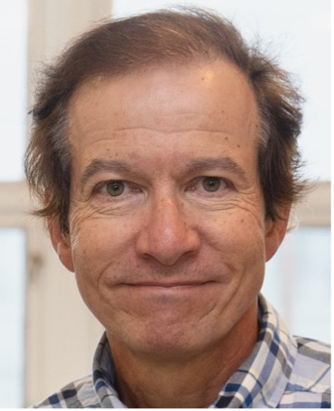

A reflection on three decades of progress in quantitative infrared thermography: from the early lock‑in and pulsed experiments of the 1990s, through pulse‑phase methods and tomographic reconstruction, to today's AI‑augmented thermographic vision.
The lecture traces the methodological arc of the field — measurement, modelling, and inversion — and asks where the next decade's breakthroughs are most likely to emerge. Particular attention is given to the convergence of thermography with deep learning, the maturation of multimodal imaging, and the field's growing role in addressing challenges in infrastructure resilience, energy efficiency, and health.
Xavier Maldague holds the Canada Research Chair in Multipolar Infrared Vision at Université Laval, where he has taught and conducted research since 1989.
His work has shaped modern quantitative thermography across several decades — including foundational contributions to active thermographic non‑destructive testing, the development of pulse‑phase thermography, and the integration of thermal imaging with machine‑learning methods for defect characterisation. His textbooks on the theory and practice of infrared thermographic NDT remain standard references for the field.
Beyond research, he has supervised dozens of doctoral theses and led international collaborations across aerospace, civil infrastructure, cultural heritage and biomedical thermography. He is a Fellow of several learned societies and the recipient of multiple lifetime and scientific achievement awards in the infrared and NDT communities.
Alongside the keynote, plenary sessions will feature invited lectures from leading figures across the conference's eight tracks.

The complete programme and invited speaker list will be announced in October 2026.